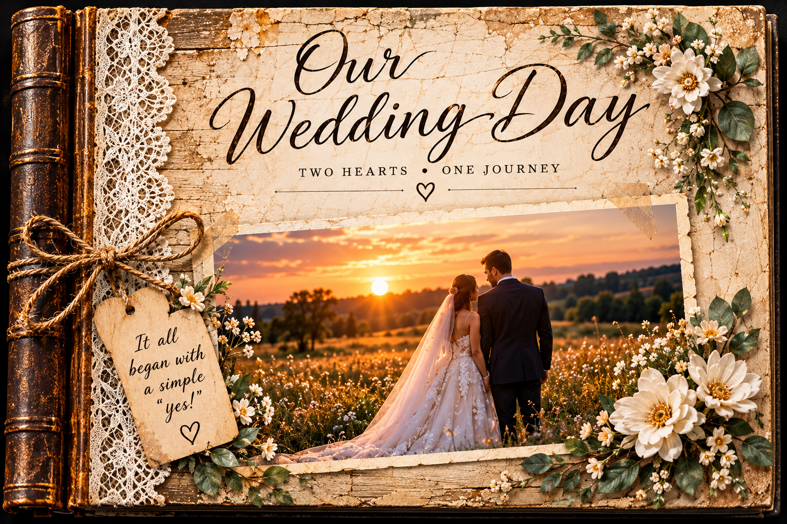

Our Wedding Day
A little inspiration for the stories waiting to be told. Explore this fictional wedding scrapbook and imagine creating a book of your own.

Cover · 1 of 6
Demonstration artwork featuring fictional people and events. The pages illustrate creative possibilities and do not represent a real family scrapbook.